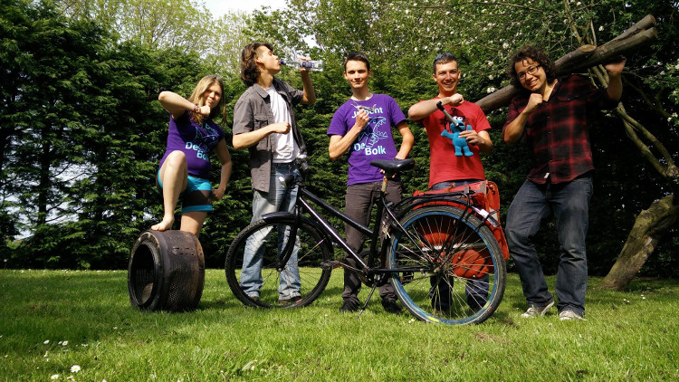

De Bolk
D.S.V. "Nieuwe Delft"

De Bolk
D.S.V. "Nieuwe Delft" staat beter bekend onder de naam van haar sociëteit: 'de Bolk'. Het is een kleine vereniging met ongeveer 150 leden. Door de kleinschaligheid ken je veel leden, ook uit andere jaren.
Onze sociëteit is open zodra er een lid aanwezig is. Bij ons mag ieder lid achter de bar staan waardoor de bar open is wanneer en zolang het jou uit komt. Natuurlijk zijn er een hoop activiteiten bij de vereniging. Zo is er van maandag tot en met donderdag een open eettafel. De eettafel begint om 18:30 met het voorgerecht. We eten gezamenlijk en het eten wordt opgediend.
Ook zijn er veel commissies die geregeld activiteiten en feesten organiseren. Zo is er voor iedereen wat te doen, of je nou van barhangen, spelletjes, films of feest houdt.
Kalender

Eettafel
Van maandag tot en met donderdag om 18:30 uur is er op de Bolk een open eettafel waar je voor €3,50 een lekkere driegangenmaaltijd kunt krijgen. Iedereen is welkom om mee te eten. Je moet je daarvoor wel aanmelden via bolknoms (vóór 15:00 uur) zodat we weten hoeveel mensen er mee eten.
Alle maaltijden worden verzorgd door leden van De Bolk. Ieder lid, eerstejaars of niet, moet daarom één keer per maand een corveetaak doen. Dat kan koken, afwassen of een bardienst zijn.
Verhuur
Het is mogelijk de sociëteit te huren voor afstudeerborrels, een verjaardagsfeestje of diner. De Bolk biedt een gezellige sociëteitsruimte voor feesten tot 130 personen. Daarnaast beschikt de sociëteit over een ruime, goed voorziene keuken waarin uitgebreide diners kunnen worden bereid tot 60 man.
Het huren van de sociëteit is mogelijk op vrijdag, zaterdag en zondag mits er geen activiteiten gepland staan. In verband met paracommerciële bepalingen van de Gemeente Delft wordt de sociëteit alleen verhuurd aan leden of oud-leden van De Bolk, of vrienden van hen.
Voor meer informatie en de planning kun je contact opnemen met de secretaris via secretaris@nieuwedelft.nl.


Contact
De Bolk (D.S.V. "Nieuwe Delft")
Buitenwatersloot 1-3
2613 TA Delft.
Telefoon: 015 212 60 12
E-mail: info@nieuwedelft.nl
KVK-nummer: 40397267
BTW-nummer: NL5359582B01
Bestuur
De vereniging wordt bestuurd door het 54e bestuur:
| President | Marieke van der Tuin | president@nieuwedelft.nl |
| Secretaris | Yvonne Haartsen | secretaris@nieuwedelft.nl |
| Thesaurier | Roderik Vogels | thesaurier@nieuwedelft.nl |
| Commissaris Bar en Sociëteit | Anne Brus | barcom@nieuwedelft.nl |
| Commissaris Maaltijden | Bram van Zwet | maaltijdcom@nieuwedelft.nl |
Oud-besturen